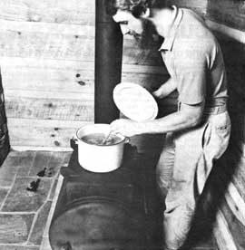

With "cold days a' comin'", we thought you'd like to know how to use MOTHER's Wood-Burner (or any wood stove) to...
Well, although the evenings may still be warm enough to lure an occasional firefly into flashin', we all know that cold weather won't be long in comin'.
And most of us are also pretty danged certain that the winter of 1979/1980 will be marked with more energy problems-such as high heating fuel prices (and limited availability), power outages, and so forth-than any cold season in recent memory.
That very strong possibility means that owning some sort of wood-burning stove-even if the appliance is only to be used as backup for your regular heating and cooking systems-makes better sense than ever!
So if you're one of those folks who don't have a "timber-powered" heater, you should know that there's still time to build yourself a "$500 wood stove" (for less than $41!) using MOTHER'S plans. And, for those men and women who already own a wood-burning wonder, we'd like to share a way to use your stove-while it's heating your home-to cook up a hearty and nutritious dinner.
In most country kitchens of the not-so-distant past (in the United States and many other nations as well), the "pot-au-feu"-a long-simmered, savory kettleful. of good foods-occupied a prominent position on "the back burner" of the family cookstove.
The traditional soup could be made with any of an almost infinite number of recipes, or it might be simply a tasty combination of leftovers. But-regardless of the fixin's used-the slow-simmer cooking method resulted in an overall blend of flavor . . . yet still allowed the individual taste of each separate ingredient to "shine on through".
Why not take advantage of the chilly days ahead ( and of your home-warming wood stove) to try out some simmered-soup recipes of your own? The innards-soothing minestrone "formula" that follows should serve to get you started.
Start your soup by preparing (or removing from your freezer) 2 quarts of stock: either beef or hearty vegetable.
Now fry 2 thinly sliced onions-along with 1/2 clove of garlic-in I/4 cup of olive (or other vegetable) oil until the onion turns yellow and translucent. (You can save yourself some pot-washing if you sauté the ingredients right in your soup kettle.)
Once the onions are ready, add 2 cups of chopped spinach, 2 cups of "slawed" cabbage, and 3 or 4 chopped carrots. Simmer the vegetables-over low heat-for about 5 minutes . . . adding more oil if necessary and taking care that the ingredients don't get too brown.
Then add 1 can of tomatoes (the can size will depend upon how "tomato-y" you want your soup to be), a couple of dashes of sage, 1 teaspoon of dried parsley, 1 cup of cooked kidney beans, 1 cup of cooked peas, and salt and pepper to taste. Stir the soup well, add 1/2 cup of uncooked rice, and mix in the previously prepared soup stock.
Let the pot simmer for at least 2 hours-adding more stock (or water or tomato Juice) if the soup begins to get too thick for your taste-and serve the cold-weather treat with a topping of grated Parmesan cheese.
EDITOR'S NOTE: If you don't already own one of MOTHER's WoodBurners-and would like to build one-the detailed, step-by-step plans are available for $10 postpaid from Mother's Plans, WoodBurner,. Dept. W, P.O. Box A, East Flat Rock, North Carolina 28726.
|
 |
|
|